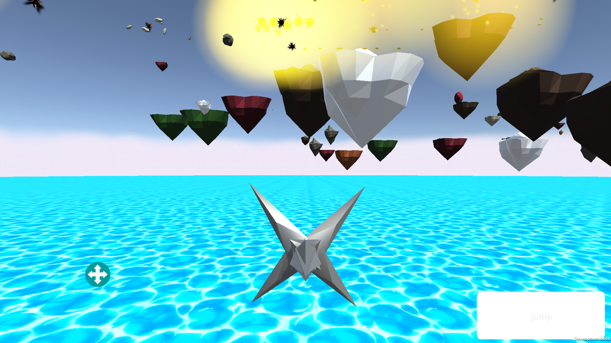
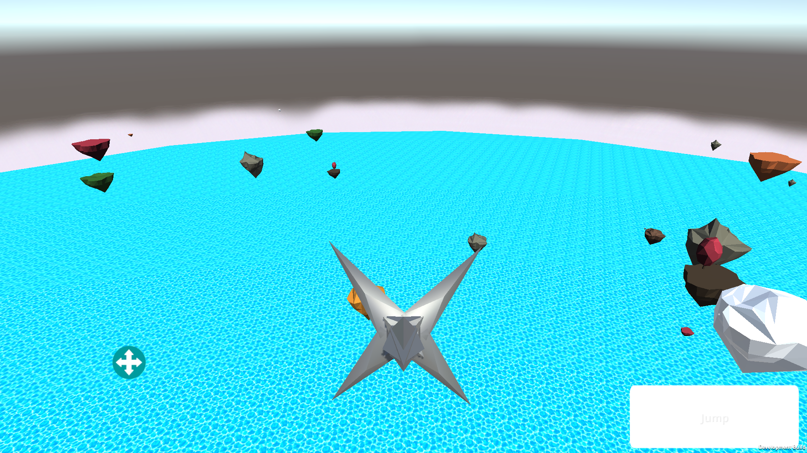

Matthew Meuwissen
In my Freetime...
I've enjoyed developing games since high school, learning and trying out different engines and programs such as Unreal and Flash but lately I've prefered using Unity for it's portability and mobile applications. I’ve taught myself how to use the different sensors of a mobile device for controls, how to simulate virtual reality on mobile devices, and general game development concepts.
Mobile Game:
- Designed and programmed the entirety of the first iteration of my multi platform mobile game
- Tested my skills as a C# programmer and pushed the limitations of the Unity3D program spending more than 300 hours personally programming the game
- My game utilizes a 3D environment and powerful physics engine to generate a fresh, open world experience for the player. I'm currently working on the second iteratation of the game, fixing bugs, adding models, and making the game look cleaner. I'm currently working on adding UI art to the hud and enemies for the player to fight.
The link below is the latest update of the game, this version only has one scene so far
Latest Game Update Link
The link below is the previous first prototype of my current Unity 5.0 project
Game Link
The latest version of the first scene has ship, island, and item models with particle effects. I've added a boost effect and an effect for when the player is damaged.
 Show SceneTo make this level of the game more fluid, I made the water plane circular and added a fog to the edge to create the illusion of and infinite world.
 Show SceneThe game begins by allowing the player to fly a cube through 3D space. The goal of the game is to use the boost button to destroy the randomly generated capsules and collect the boost gems and coins they drop. Going through the floating rectangle will bring you to the next phase of the game.
 Show Scene
Show Scene
In this scene the player controls a cube on the ground fighting other cubes that jump at the player. If the player dies or if they press the button at the top of the screen it will lead them to the next part of the game. This was the toughest scene to program, I had some challenges getting the virtual joystick to rotate the player correctly and getting the weapon capsule and sphere to correctly follow the player without interfering with the player's model.
 Show Scene 2
Show Scene 2
The last scene is simply a playground for the player to interact with the items they've collected and by going though the rectangle, the player will be returned to the original scene.
 Show Scene 3
Show Scene 3
Pedestrian Game:
- Lead programmer for an Actionscript flash game
- Implimented controls for an open, isometric map and in-game cutscenes
- Worked alongside Menomonie Pedestrian Services to fulfill requirements
- Presented game during University of Wisconsin, Stout indie game competition